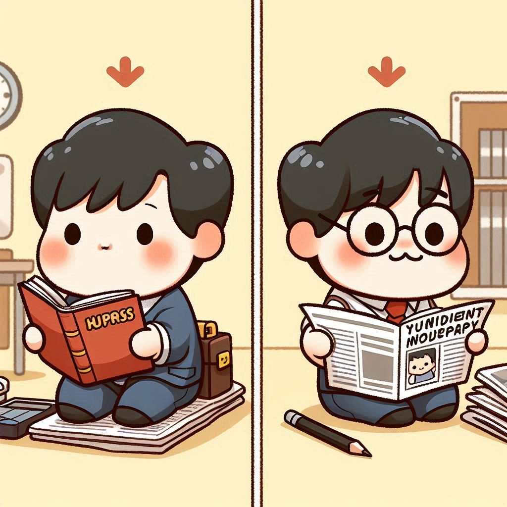

About Me
Uni Life
Before coming to Australia in 2013, I completed my bachelor's degrees (B.S. in Business Administration, B.A. in Economics & Finance) in South Korea. During the bachelor course, I managed to pass CFA Level 1 Exam and GARP FRM Full Exam. With the academic achievement, I was also actively involved in a Business Student Press, where I could develop team skills as well as writing skills.
To Australia
In March 2013, I arrived at Perth with the desire that I could extend my insight into the world. Thanks to the successful period with Working Holiday Visa, I was able to improve my English, which was my biggest drawback, as well as save money to stay in Australia as a student. After my decision of marriage with my current wife, I had to make and conduct a plan to stay in Australia longer, which was the start point of my long journey to get a permanent visa.
Accountant Life
My first choice was accounting. That’s because I needed to focus on what I was good at, and accounting was what I had strong confidence in. After completing my master course in Accounting, I started my career in POSCO Perth, which was the Perth Office of the largest steel-producing company in Korea. During my tenure at POSCO Perth, I achieved many things. Particularly, I successfully processed the company’s “first” dividend payment and onwards dividends, totally tens of million dollars.
Coding Life
My coding journey started with self-studying Python in 2023, when I was captured by the interesting aspects of coding. I was inspired to make a career transition to IT. In 2024, I studied at Tafe to build a foundation knowledge and skills as a programmer. Through the Certi IV course at Tafe as well as personal projects, I have learned various languages, including Python, C#, SQL, HTML, CSS, and JS. Now, I am ready to contribute to the IT industry!!!